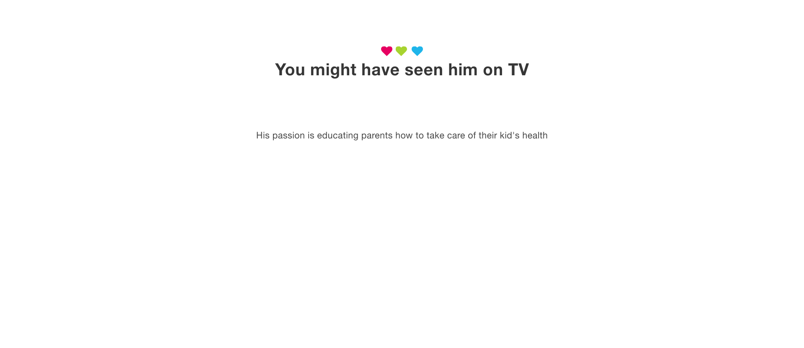

Rated 4.9 Stars based on 3498 Reviews


![How can he help? Dr. Medhat is a general pediatrician covering a wide scope of health issues in children including pediatric allergy and is one of very few tongue tie experts in the region. SERVICES Management Of Newborn Gastrointestinal problems Spitting Up (Reflux), Vomiting, Colic, Diarrhea, Constipation, etc. Well Child Care Developmental Evaluation, Screening for Autism, Vision Screening, Hearing Screening, etc. Acute Care and Sick Visits Rapid Strep test, Influenza A and B testing, RSV testing, Nebulization, Drainage of Abscess / Boils, Removal of Sutures Surgical Procedures Surgical Release of Tongue tie and Lip tie, Surgical Removal of Warts / Molluscums / Skin Tags, Cauterization of Umbilical Granuloma](index_html_files/54.jpg)
![Award Winning Clinic Best Multi-Specialty Clinic Dubai Healthcare City Authority 2020 Best Pediatric Clinic London Based MEA Magazine UAE Business Awards 2018 & 2019 Best Pediatric Dentistry Clinic London Based MEA Magazine UAE Business Awards 2019 Top Pediatric Center in Dubai Mother, Baby and Child Magazine My Pedia Clinic myPediaclinic is a state-of-the-art multi-specialty Pediatric clinic in Dubai that is loved by children and parents alike. Our clinic is designed to make kids love it the moment they come in with play area right at the entrance, toys everywhere, colorful walls and cartoonish wallpapers. ABOUT](index_html_files/57.jpg)